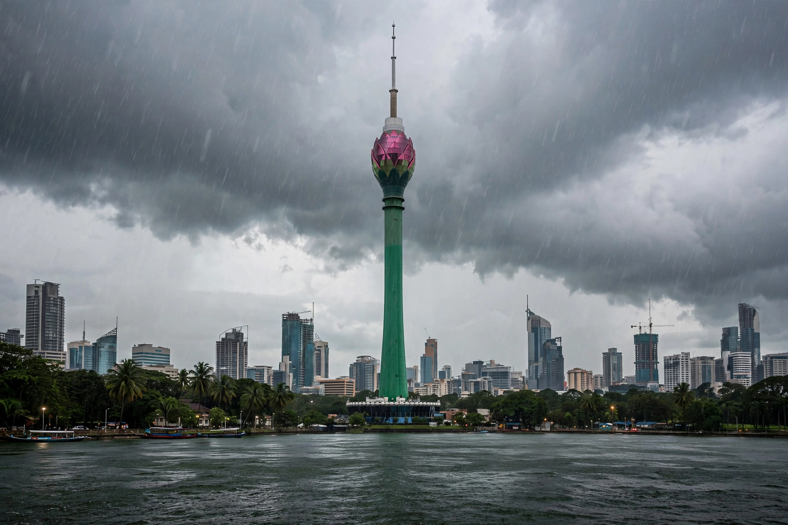

[Image placeholder: The Colombo Lotus Tower above Beira Lake]| Country | Sri Lanka |
|---|---|
| Status | Executive and judicial capital; former legislative capital |
| Population | About 750,000 (city); metro over 5 million |
| Port | One of South Asia's busiest transshipment ports |
**Colombo** is the executive and judicial capital of Sri Lanka and its largest city and commercial centre. (Sri Jayawardenepura Kotte, a suburb, is the legislative capital.) A natural harbour on the island's west coast made Colombo a trading port for over 2,000 years — known to Romans, Arabs and Chinese — before successive Portuguese (1517), Dutch (1656) and British (1796) colonial rule made it the island's capital.
Modern Colombo mixes the colonial Fort district and Pettah bazaars with new skylines: the Lotus Tower (2019), among South Asia's tallest structures, and Port City Colombo, a vast Chinese-built land reclamation aiming to create a new financial district. The 2022 economic crisis and mass protests (the Aragalaya) centred on Colombo's Galle Face Green and the presidential secretariat.
The Portuguese fortified Colombo; the Dutch expanded its canals and cinnamon trade; the British built the breakwater harbour that made it an 'emporium of the East' on Suez shipping routes. Independence in 1948 kept Colombo as capital.
Highlights include the red-and-white Jami Ul-Alfar Mosque in Pettah, Gangaramaya Temple on Beira Lake, Geoffrey Bawa's architecture, and the seaside promenade of Galle Face, founded 1859.